QUADRANT
10.2021GAME PIECE EXPERIMENT 1:a composition made through choice, chance and structure.
QUADRANT is a two-part performance built as a pair of games. In the first, dancers navigate a square marked on the floor, where different lines and regions establish conditions for improvised movement. Cues from a MIDI pad alter the demands of speed, direction, height, movement quality and synchronization with other dancers, requiring decisions to be made in the moment. The choreography is produced through the dancers' responses, not through a sequence of steps set in advance.
The second game brings live musicians into the composition. A film made up of flashing colors of varying durations serves as a cueing system. At each change of color, performers claim one of a limited number of places in the active group, consisting of the dancers and musicians who will perform during that interval. Once those places are filled, no one else can enter the composition. The game takes on something of the character of musical chairs, with performers continually negotiating their positions in relation to one another. The film governs the timing, but the players determine the resulting arrangement of music and movement.
In both games, the score establishes the conditions, but not the result. The work is made through the decisions performers take within those conditions.

Complete musical recording, including the opening conversation.
THE CUE FILM
Presented here is the original thirty-minute film projected during Game Two of QUADRANT. It was not a backdrop or documentation of the performance; it was the cueing system that every performer across disciplines responded to. Each change of color signaled a new opportunity for performers to enter the active composition, while the duration of each color determined how long that configuration would last.
The film was predetermined, but what happened in response to it was decided collectively in real time.
THE MATERIALS BOOK
QUADRANT / 2021 / MEDIUM-FORMAT FILMThe Materials Book was printed and distributed to audiences during QUADRANT as part of the performance, not as a standalone photographic series.
The photographs arrange bodies alongside construction materials (carried over from NEGATIVE AURA), treating each as material for choreographic recomposition. Accompanied by instructions for rearrangement, they propose possible configurations rather than documenting finished choreography. The book extends the performance's investigation of how structures give rise to movement.
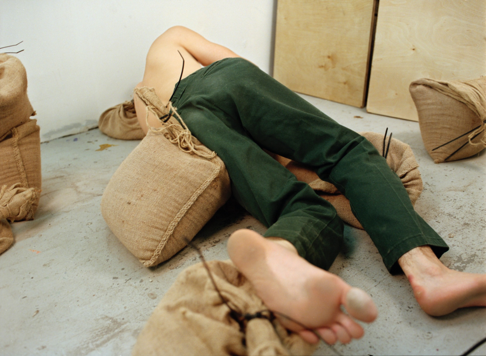
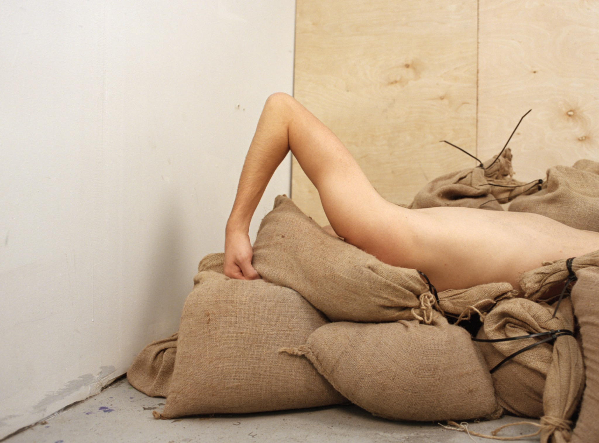
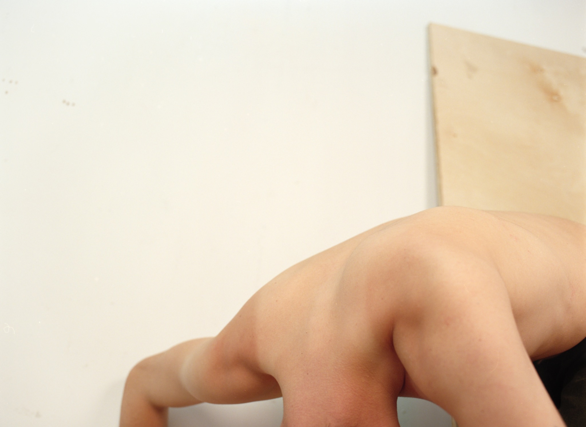
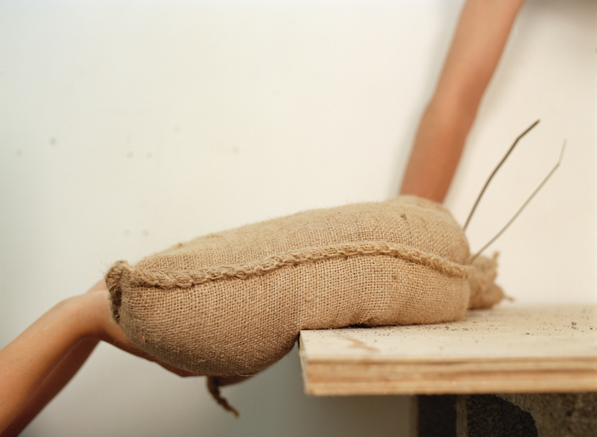
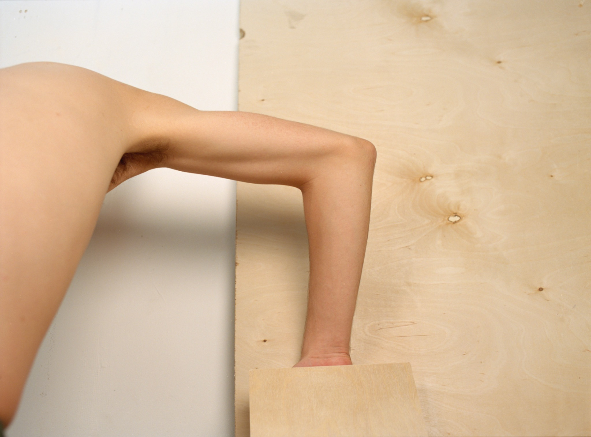
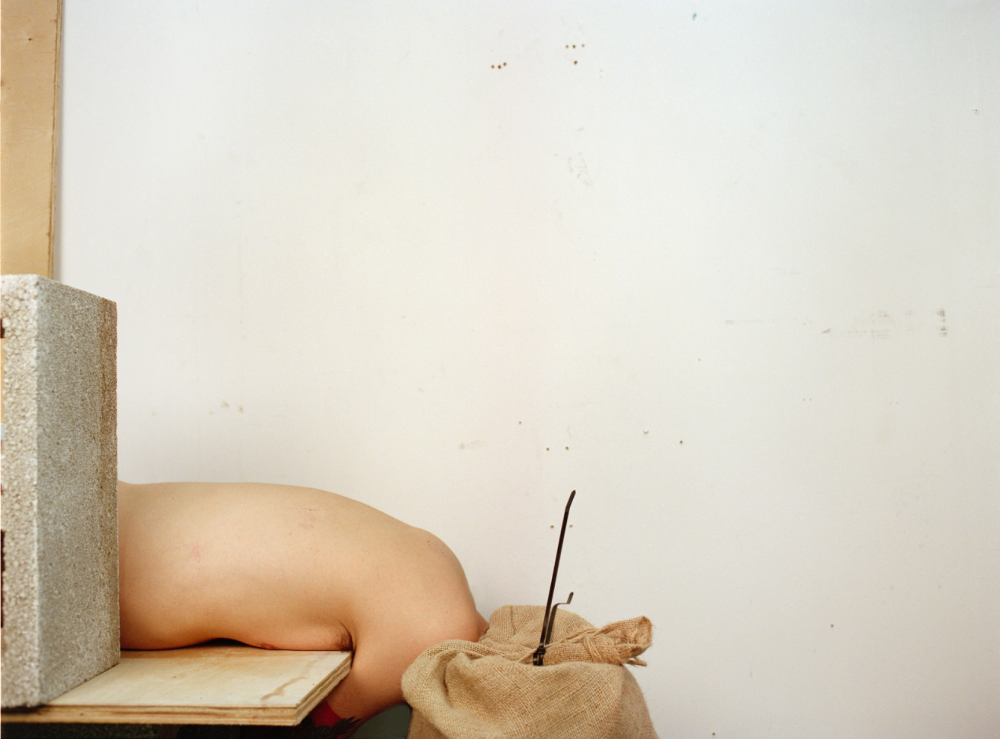
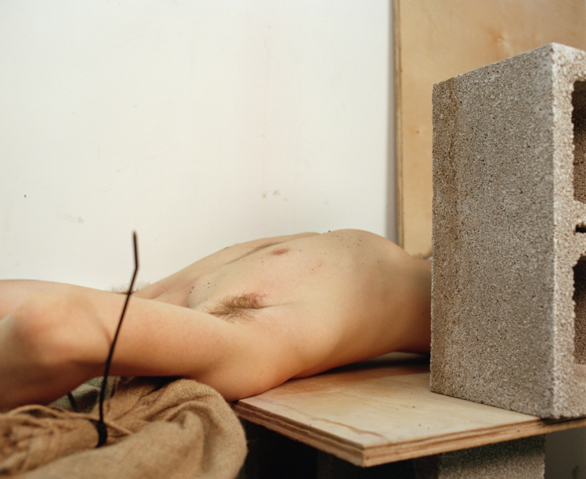
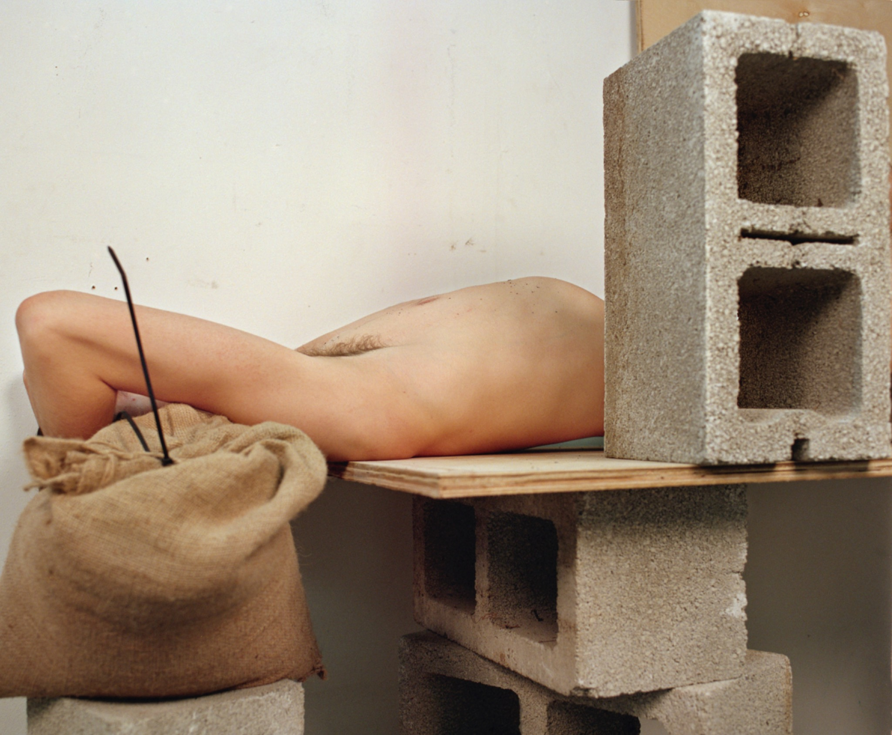
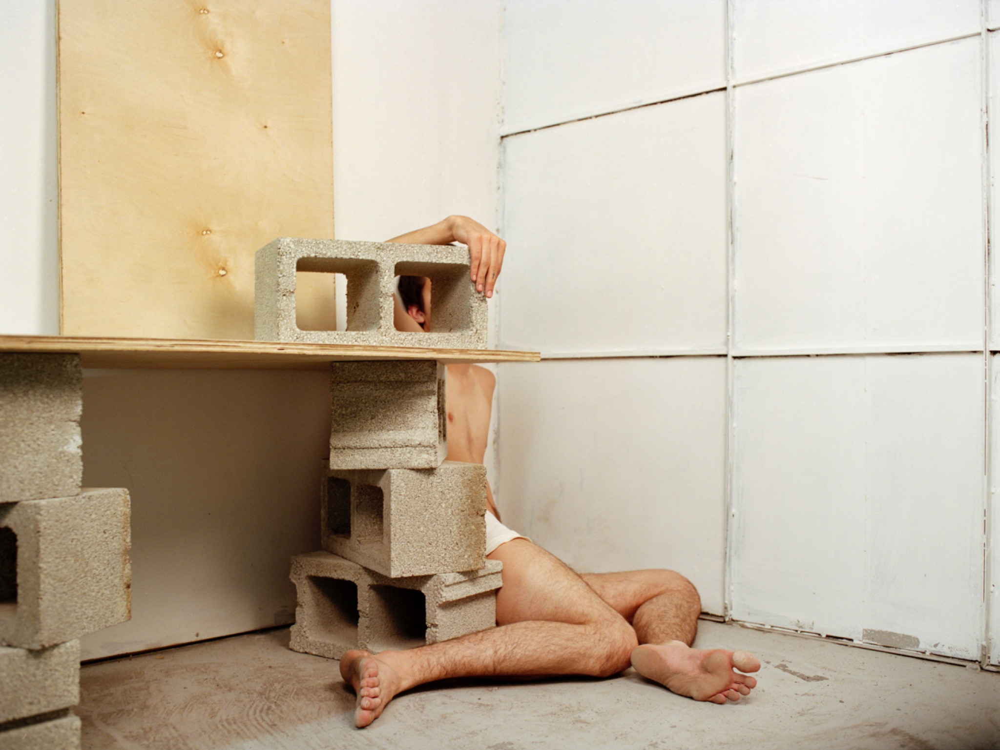
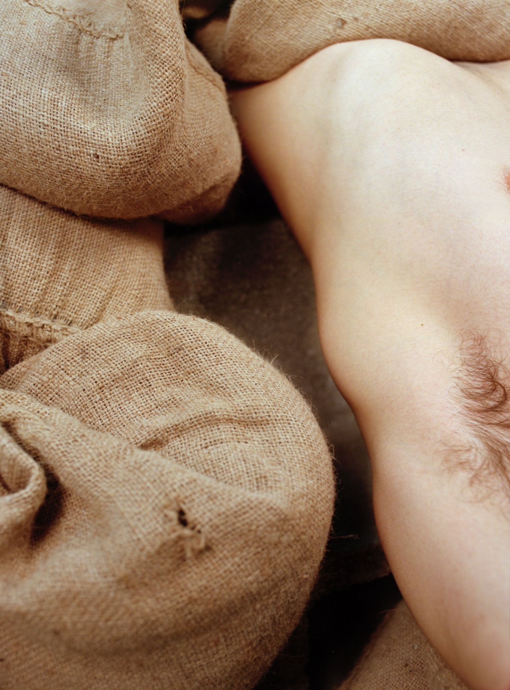
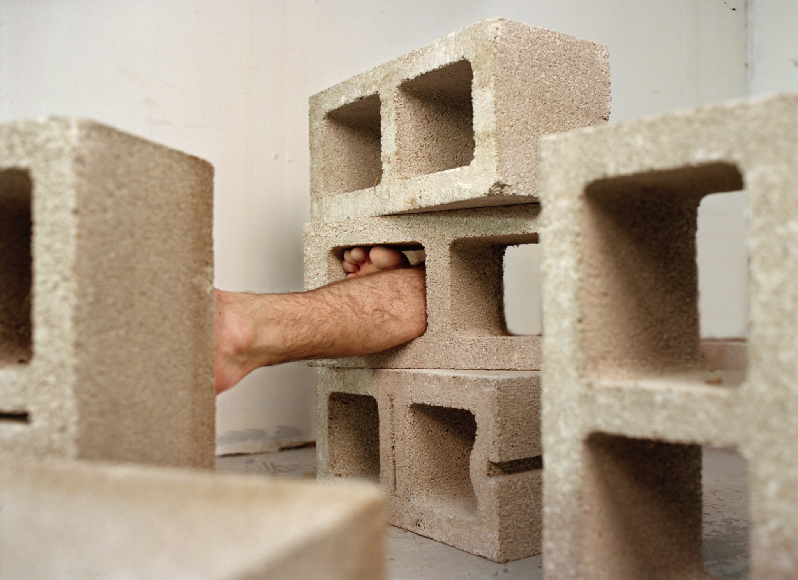
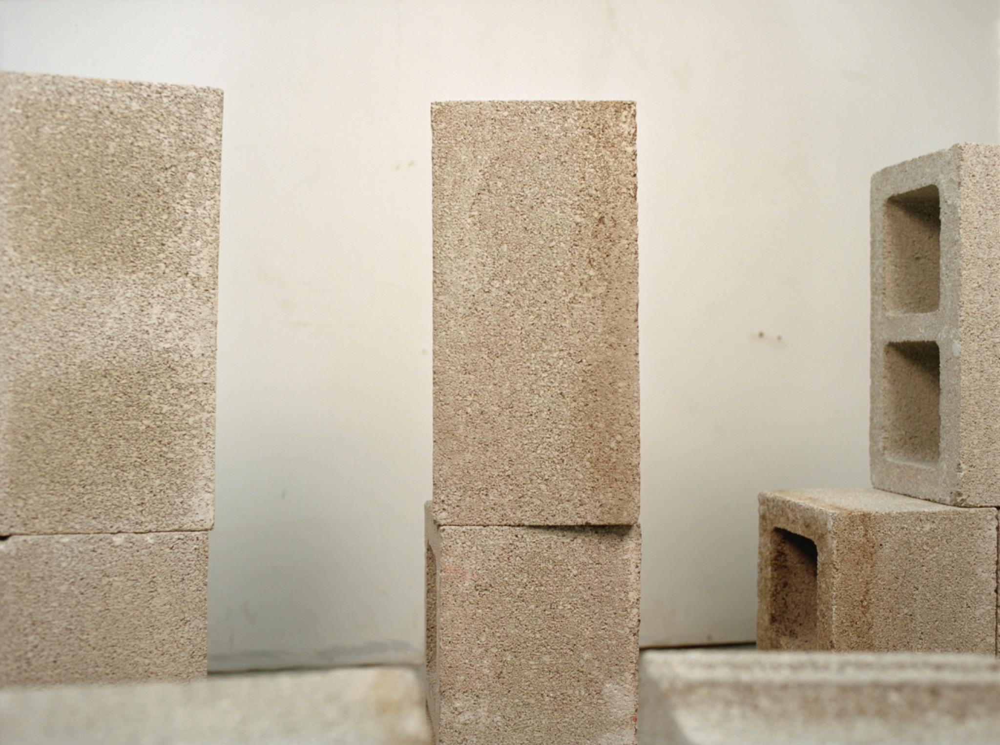
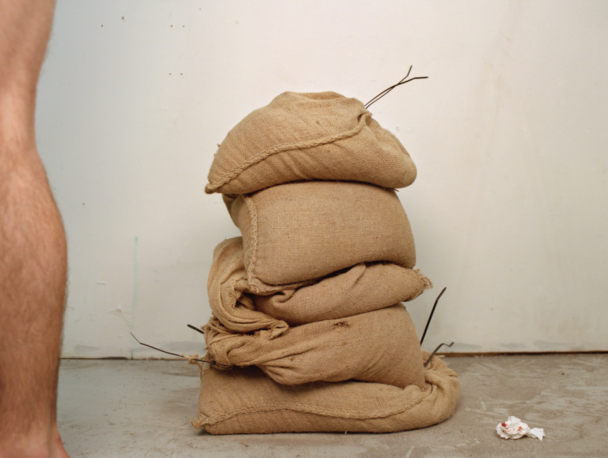
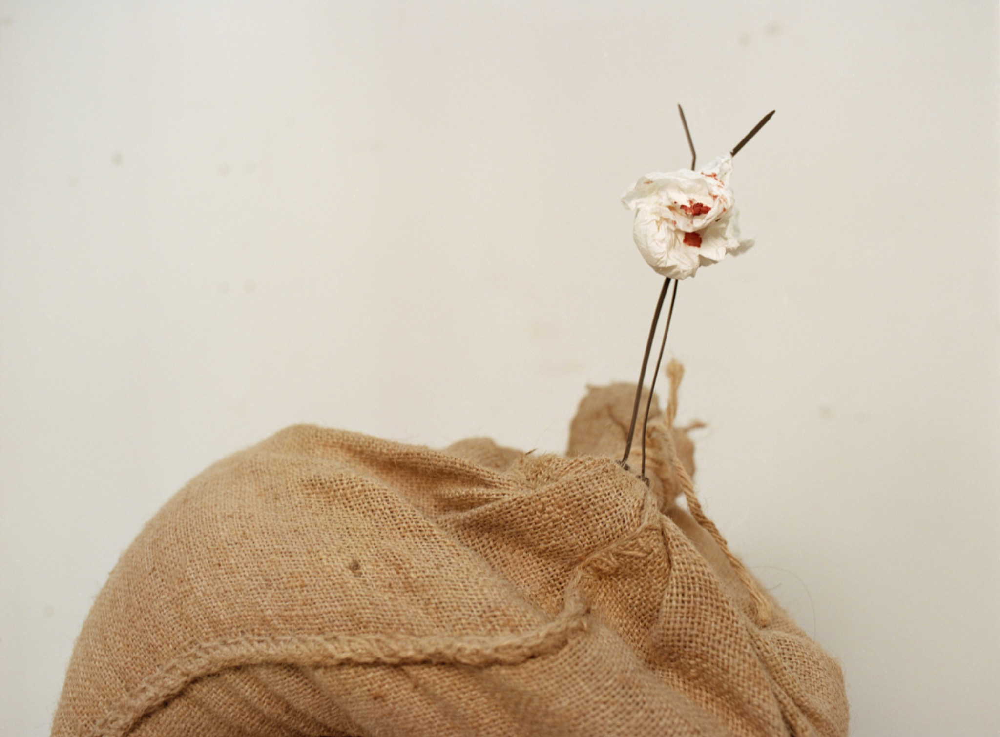
DOCUMENTATION
PERFORMANCE / REHEARSAL / PROCESSDEVELOPING THE MOVEMENT VOCABULARY
Rehearsal footage with choreographer Tai Lee, arranger Cade Slattery, and dancer Cameron Dunham.
These sessions investigate the development of movement directives and the methods by which they could be cued, triggered, or assigned to positions within the QUADRANT board. Working collaboratively, the three experiment with physical actions, their possible variations, and the mechanisms through which the arranger can direct and reorganize movement in real time.
Rather than rehearsing a predetermined sequence, the process involves constructing the vocabulary and procedures from which the choreography will emerge.